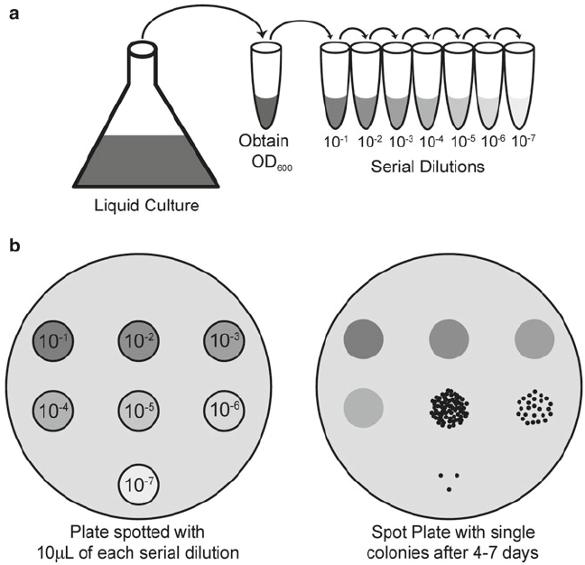
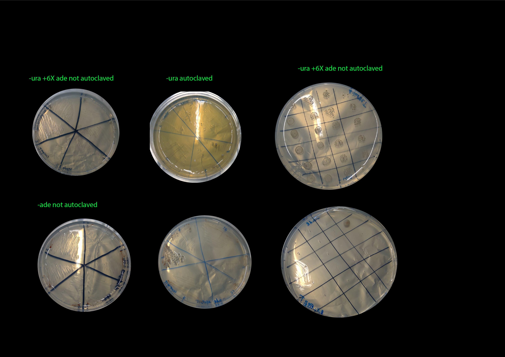
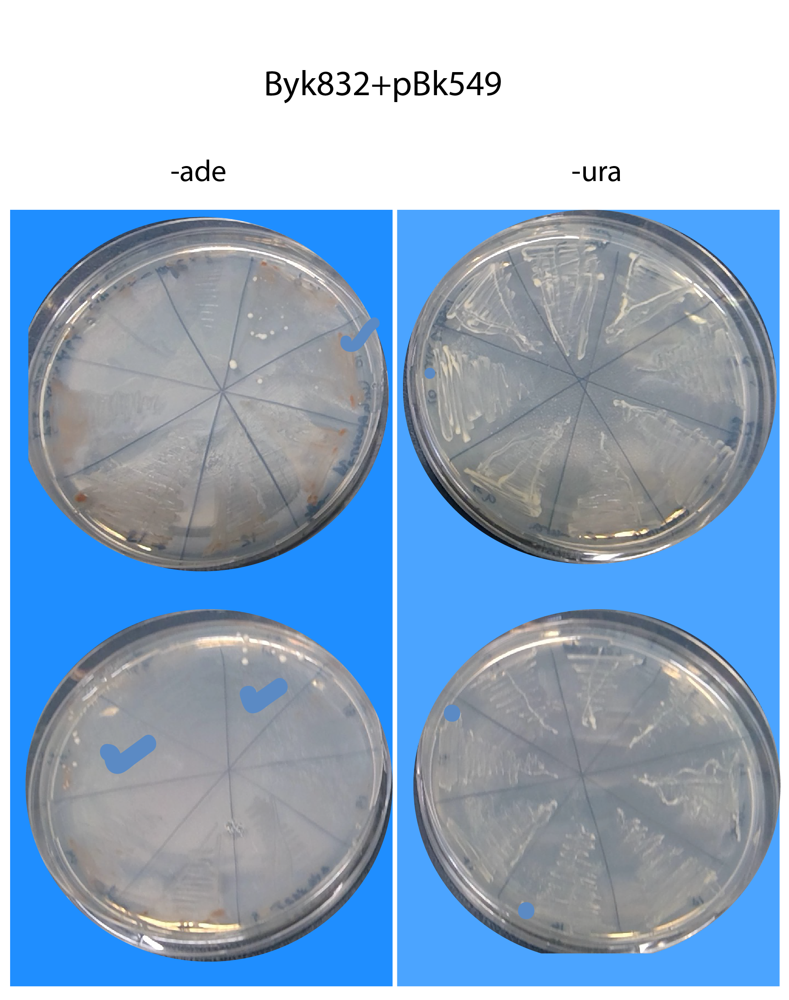
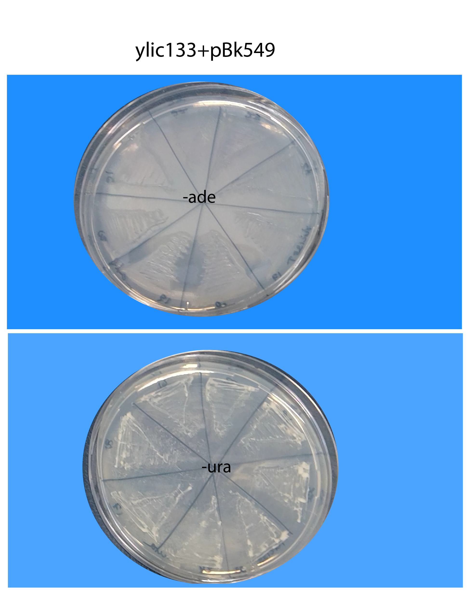
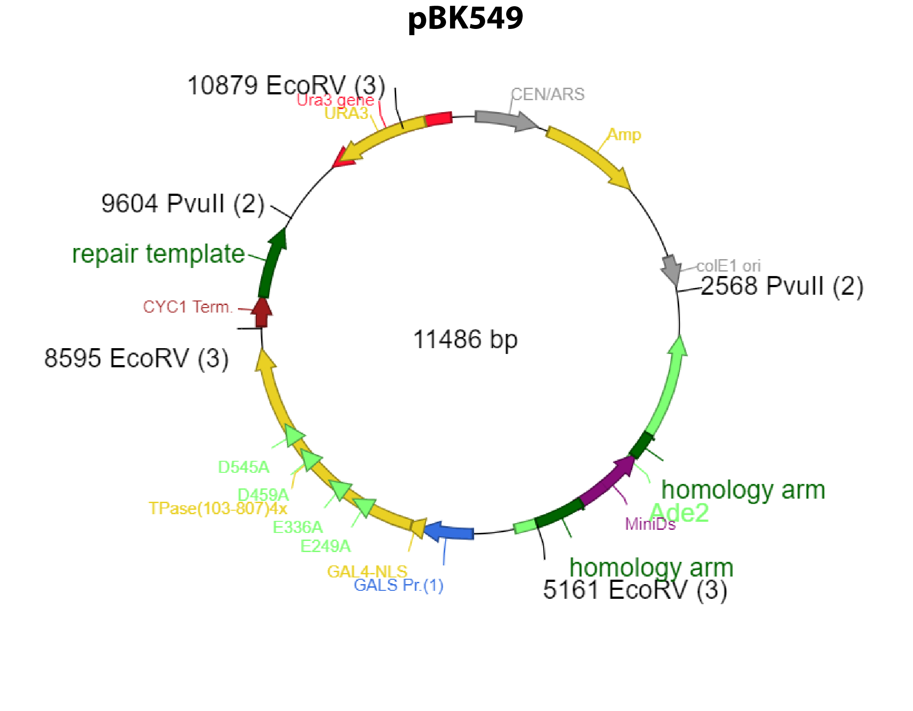

3. Title : 12082019-Checking clones of Byk832 and ylic33_1 for SATAY :😊¶
3.1. Date¶
12082019
3.2. Objective¶
To check the clones ability to fully grow in -URA and have few growth in -ade, and select them for glycerol stocks and further SATAY experiment.
3.3. Method¶
We are going to use spot plating , in -ura and -ade to evaluate better the differences in growth. See here the method :point_down:

Specifically we selected 12 colonies of ylic33_1+pBK549 and Byk832+pBK549
3 serial dilutions of each colony, e.g. 10, 100x, 1000x in MiliQ
I spotted 5ul per dilution on the plate.
3.4. Results¶
16082019

21082019- restreaking of same clones on -ura (autoclaved) and -ade plates :( 
Basically extermely miserable growth in the -ura plates
26082019- results of restreaking clones from Byk832T and ylic133_1T in -ura+6xade (without autoclaving) and -ade (without autoclaving).
Byk832T :)

ylic133_1T :(

3.5. Conclusion¶
The transformed strains in general grow very slowly in the -ura plates, the plates of the picture have been for 4 days already in the 30C incubator.
No growth in -ade is observed, in the ylic133T strain so there is no spontaneous repair of the ade locus in those cells, meaning that transposition can not happen, in those re-streakings.
We succesfully found three strains from Byk832T that pass the sanity check. :)
We stored them as glycerol stock (though it can be a potential concern) because the spontaneous repair by homologous recombination happens kind of stochastically , so, the fact that those strains show the correct behaviour to continue with SATAY, does not imply that a highly dense culture will keep that behaviour.
In the protocol written by Benoit and Agnes from ETH, they dont mention this step of storing the strain in glycerol stocks before continuing with SATAY.
3.6. Here is what we should expect 🙏👍:¶
This info can be found in: This link
pBK549 is a weird cookie
 The plasmid has a tendency to recombine out the transposase in bacteria thanks to the homologies between the homology arms and the repair template.
Two recombinations are possible depending on which arm does the recombination:
One that kicks out the miniDs
One that does not.
In both cases the plasmid will lack the transposase and the begining of ADE2.
None of the recombined plasmid will generate ADE+ progeny.
TEST THE SANITY OF YOUR YEAST TRANSFORMANTS:
Of course, the plasmid can also recombine in S cerevisiae. To avoid starting a screen with the wrong clone, streak several transformants (10-20) directly from the transformation plate (-Ura) onto -Ade +Dex.
A recombined clone will generate zero ADE+ colonies, while a good clone will generate a small number (2-10) of spontaneously ADE+ colonies by homologous recombination (see below).
Make sure that you streak a good amount of cells on -Ade, since the spontaneous homologous recombination is rare.
Also streak on -Ura to propagate the clone.
Conversely, if your streak is full of colonies (>100) on -Ade, it means that your clone is full of spontaneously recombined ADE+ cells. You don’t want to use this one either. (very high background)
Continue with good clones, starting from the -Ura streak (see below, clone 3 has been used further. Any but number 1 would do).